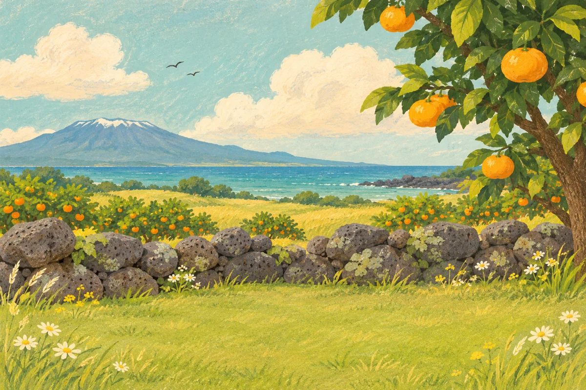
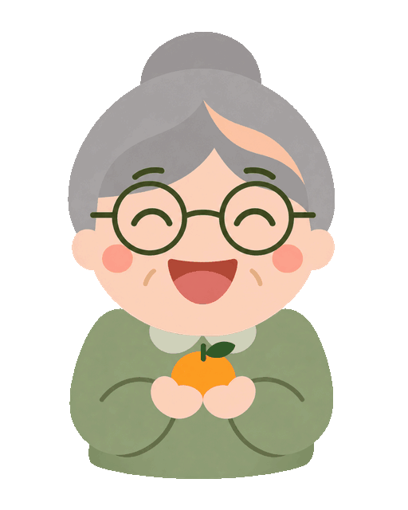

할망의 제주어 낱말책
혼저 옵서.
어서 오십시오.
할망과 빈칸을 채우며 생활 속 제주어를 익혀요.
한 판 10문제보기 5개문제당 30초


낱말 미리보기
카드를 열어 문장을 들어보세요.
문장 번역
문장을 적거나 추천 문장을 골라, 제주어와 표준어를 나란히 읽어 보세요.
할망과 빈칸을 채우며 생활 속 제주어를 익혀요.


카드를 열어 문장을 들어보세요.
문장을 적거나 추천 문장을 골라, 제주어와 표준어를 나란히 읽어 보세요.